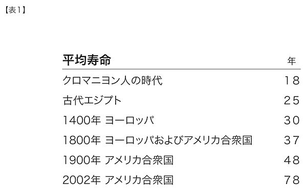

生物科学のどこを探しても、死の必然性を解き明かす手がかりがないのはじつに驚くべきことだ。仮に永久機関を作ろうとしても、われわれが学んだ数々の物理法則からするとそれは絶対に不可能だとわかっている。そうでなければ法則が間違っているのだ。しかし、生物学においては、まだ死の必然性を裏づける証拠は見つかっていない。このことからわたしは、死は必ずしも避けられないものではないと考える。生物学者がわれわれの苦しみの原因となっているものを発見するのは時間の問題であり、この恐るべき普遍的な病、あるいは人体のはかなさは、いずれ解消されると考えている。
──リチャード・ファインマン
決して負けるな、決して屈するな、決して、決して、決して、決して──何であろうと、大事か小事かにかかわらず、決して屈してはならない。
──ウィンストン・チャーチル
まずは永遠の生命を！ 他は全て待つことができる。
──コーウィン・プレイター
避けられない死は生物進化の基礎となるが、だからといってそれがよいことだというわけではない。
──ミハイル・アニシモフ
仮にあなたが二〇〇年前の科学者で、どうすれば衛生を改善させて幼児死亡率を激減させられるかを理解したとしよう。あなたがそれについて話すと、誰かが背後でこう言う。「ちょっと待て。そんなことをすれば人口爆発が起きるぞ！」あなたが、「いや、皆がセックスのときにこのへんてこなゴムを着ければ全てはうまくいくはずだ」と答えても、誰も取りあわなかっただろう。しかし、それはまさに現実のこととなった──障壁式避妊法は広く採用されたのだ（時を同じくして幼児死亡率は低下した）。
──オーブリー・デ・グレイ 不老不死の研究家
われわれには死すべき義務がある。
──ディック・ラム コロラド州元知事
われわれの中には、これはむしろ哀れなことだと考える者もいる。
──バートランド・ラッセル、一九五五年、一日あたり約一〇万人が老衰で死んでいるという統計へのコメント038。
進化、すなわち人類を生みだした過程は、ただひとつの目的をもっている。それは最大限の自己複製が可能な遺伝子機械（ジーン・マシン）を作ることだ。振り返ってみると、これは生命のように複雑な構造が、知性のない宇宙にどうにか生まれ出る唯一の方法だった。しかしこの目的は、死や苦しみや短い寿命をもたらすので、しばしば人間の利害とは一致しない。これまでの人間の進歩は、進化上の束縛を打ち破る歴史であった。
──ミハイル・アニシモフ
本書の読者の多くは、生きているうちに特異点を迎えることになりそうだ。先の章で見てきたように、バイオテクノロジーの進歩は加速しつつあり、遺伝子や代謝プロセスをプログラムし直して病気や老化を克服できるようになるだろう。この進歩には、ゲノミクス（遺伝子操作）、プロテオミクス（タンパク質の役割の理解と操作）、遺伝子治療（ＲＮＡ干渉などのテクノロジーによる遺伝子発現の抑制、新しい遺伝子の細胞核への導入）、合理的な薬の設計（病気や老化による体変化そのものに狙いを絞った薬物設計）、細胞や組織、器官を若返らせる治療的クローニング（細胞分裂を継続させるテロメアの寿命の伸長とＤＮＡ修復）およびその関連分野の急速な進歩が含まれる。

平均寿命については注039参照
バイオテクノロジーは生物学の範囲を広げ、生物的過程の明らかな欠陥を正すだろう。それに重なるナノテクノロジー革命は、けっして超えられなかった生物的限界の超越を可能にしてくれる。テリー・グロスマンとわたしが『素晴らしい未来への航海』で明記したように、われわれは、体や脳と呼んでいるこの「家」を無期限に維持し拡張していく知識と道具を急速に手に入れつつある。不幸なことに、わたしと同じベビーブーマーの大半は疑うことなく、病気や死を、先人も歩んできた「あたりまえの」人生の経過として受け入れようとしている──もしも積極的に行動を起こし、基本的な健康的生活様式についての既成概念を超越すれば、それは避けられるのだが。
歴史上、人間が寿命という限界を超えて生き続ける唯一の手だては、その価値観や信仰や知識を将来の世代に伝えることだった。今、われわれは存在の基盤となるパターンのストックが保存できるようになるという意味で、パラダイム・シフトを迎えつつある。人間の平均寿命は着実に伸びており、やがてその伸長はさらに加速するだろう。現在、生命と病の根底にある情報プロセスのリバースエジニアリングが始まったところだ。ロバート・フレイタスは、老化や病気のうち、医学的に予防可能な症状の五〇パーセントを実際に予防すれば、平均寿命は一五〇年を超えるだろうと予測する040。さらに、そういった問題の九〇パーセントを予防すれば、平均寿命は五〇〇年を超える。九九パーセントならば、一〇〇〇年以上生きることになるだろう。バイオテクノロジーとナノテクノロジーの革命が完全に現実のものになれば、実質的にはあらゆる医学的原因による死をなくすことができると予想される。非生物的存在になっていくにつれて、われわれは「自分をバックアップする」（知識、技能、性格の基本をなす重要なパターンを貯蔵しておく）方法を手に入れ、たいていの死因は取り除けるようになるだろう。
非生物的体験への変容
同じレベルにとどまる心は、永遠の命を得ることはできない。成長しなければ、数千年後には、人間というよりも繰り返しを続けるエンドレステープのような存在になっているだろう。限りなく長く生きるには、心も成長しなくてはならない……そして十分成長したとき、振り返る……そのときもともとの心にたいしていかなる共感を抱くことになるのだろうか。のちの存在は、もとからあったもの全てであるばかりでなく、はるかにそれを超えたものなのである。
──ヴァーナー・ヴィンジ
将来の帝国は心の帝国である。
──ウィンストン・チャーチル
脳のアップロードについては第四章で記した。脳のポーティング〔性能を向上させるためにいろいろ変更すること〕の簡単なシナリオでは、人間の脳をスキャニングし（おそらく内部から）、顕著なディテールを全て捉え、脳の状態を異なる──おそらくより強力な──コンピューティング基板に移し替えることになる。これは実現可能な処置であり、おそらく二〇三〇年代の終わりには現実のものとなっているだろう。しかし、わたしが考える非生物的経験への移行は、このような形で起きるものではない。そして、他のパラダイム・シフトがそうだったように、ゆっくりと（しかし加速しながら）移行していくだろう。
すでに指摘したように、非生物的思考への転換はすべりやすい坂道を転がるように加速していくが、それはもう始まっている。われわれは人間の体をもち続けるが、それはわれわれの知能を投影した可変のものになるだろう。言い換えれば、ひとたびマイクロ・ナノテクノロジー加工技術と合体すれば、意のままに体を作ったり変えたりできるようになるのだ。
しかし、そうなったとしても、そのような根本的な転換によって永遠に生きることが可能になるだろうか。その答えは「生」と「死」をどう捉えるかにかかっている。今日、パソコンのファイルで行っていることを考えてみよう。古いコンピュータを新しいものに換えるとき、全てのファイルを捨てるわけではない。それどころか、ファイルをコピーして新しいハードウェアに再インストールする。ソフトウェアは必ずしも永遠に存在し続けるわけではないが、本質的にその寿命は、その土台となっているハードウェアには依存せず、切り離されているのだ。
今のところ、われわれ人間というハードウェアが壊れると、生命というソフトウェア──個々の「精神のファイル」──も一緒に消える。しかし、われわれが脳（および神経系、内分泌系、その他精神ファイルを構成する組織）と呼ぶパターンに収められた数千兆バイトもの情報を保存し、復元する方法がわかれば、事情は違ってくる。
そのとき、精神のファイルの寿命は、個別のハードウェア媒体の永続性（たとえば、生物としての体や脳が生き残るかどうか、など）には依存しなくなるだろう。最終的に、ソフトウェアをベースとする人間は、今日われわれが知っている人間の厳しい限界を大きく超えるものになる。彼らはウェブ上で生きてゆき、必要なときや、そうしたいと思ったときには体を映し出す。その形態は多様で、ヴァーチャル・リアリティのさまざまな世界を舞台とするヴァーチャルな体、ホログラフィで投影された体、フォグレットが作りだす体、ナノボットの大群やその他のナノテクノロジーの形態で組織された物理的な体などがある。
二一世紀半ばまでには、人間は限りなく思考を拡大できるようになるだろう。これは一種の不死と言えるが、データと情報は必ずしも永久不滅ではないことを指摘しておかなければならない。つまり、情報の寿命はその妥当性、有用性、利便性によって異なる。もしあなたが古く、よくわからないフォーマットの記憶装置にある旧式の書式（たとえば、一九七〇年代の小型コンピュータの磁気テープ）から情報を引き出そうと試みたことがあれば、ソフトウェアをすぐ使える状態に保つにはどれほど手間がかかるか、おわかりだろう。しかし、精神ファイルの維持に努め、頻繁にバックアップをとり、最新のフォーマットや媒体へ書き換えを行っていけば、少なくとも人間のソフトウェア部分については、ある種の永続性を獲得できる。今世紀の終わりごろには、人々はかつての人間がそのもっとも貴重な情報、すなわち脳や体に含まれる情報のバックアップをとらずに生きていたことにひどく驚くはずだ。
この不滅の形は、概念としては、今日われわれが知るような肉体をもつ人間が不滅になるということなのだろうか。ある意味ではそうだ。なぜなら、今日でも自分というものは不変の物質の集まりではないからだ。最近の研究では、比較的長もちすると考えられていたニューロンでさえ、神経細管〔樹状突起や軸索内の細管〕などを含む構成組織を約数週間で全て交換するとわかっている。われわれの形状とエネルギーのパターンはかろうじて存続するが、それも少しずつ変わっていく。それと同じように、ソフトウェアの人間の場合も、パターンとして存続し、発展し、ゆっくりと変わっていくことになるだろう。
しかし、わたしの精神のファイルをベースとする人物、すなわちいくつものコンピューティング基板に転々と移り住み、どの思考媒体よりも長生きするその人は、本当にわたしなのだろうか。これを突き詰めていくと、プラトンの「対話篇」の時代から議論されてきた意識とアイデンティティという問題に立ち返ることになる（これについては次章で考察する）。二一世紀の間に、これらは高尚な哲学論争の議題としてではなく、実際的で、政治的で、法的な、きわめて重要な問題として対処しなくてはならなくなるだろう。
それに関連する疑問。死は好ましいか。死の「必然性」は人間の思考に深くしみ込んでいる。死が避けられないのなら、われわれは死を不可避で崇高なものでさえあるとして、理屈をつけて正当化する他ないだろう。特異点のテクノロジーによって、人間はもっと偉大ななにものかに進化するための、実際的で便利な手段を手に入れるだろう。そうなれば、人生に意味を与える根本的手段として、死を正当化する必要はなくなる。
情報の寿命
「その瞬間の恐ろしさを」王は続けた。「余は決して、決して忘れないだろう！」「そうでしょうとも」と女王は言った。「書き留めておかないのであれば、の話ですけど」
──ルイス・キャロル『鏡の中のアリス』
その存在を確信できるのは、ことわざにも言うとおり、死と税だけである──しかし、死については確信しすぎてはならない。
──ジョセフ・ストラウト 神経科学者
わたしにはわかりません。ただ、それがなんであろうと、あなたがたがそれに課税することだけは確信しております。
──マイケル・ファラデー 電磁気学のデモンストレーションに関して、どんな実用品ができるかという英国大蔵省からの質問に答えて
あの快い夜の中へおとなしく入ってはいけない。
老人は日暮れには 燃えさかり荒れ狂うべきなのだ。
光の滅んでゆくのを激怒せよ 激怒せよ。
──ディラン・トマス〔田中清太郎訳『ディラン・トマス全集Ⅰ 詩』国文社より〕
われわれの生命、歴史、思考、技能を情報へ移し替えるさいには、その情報がどれだけ長もちするかが問題になる。わたしはつねに知識というものに深い敬意を抱き、まるで子どものようにあらゆる情報を集めているが、この性向は父から受け継いだものだ。
その人生の背景のせいもあって、父は人生の記録となるあらゆる映像や音を大切にとっておくタイプの人だった。父が一九七〇年に五八歳で思いがけず亡くなったとき、わたしは父の記録保管庫を受け継ぎ、今に至るまで大切にしている。一九三八年にウィーン大学より博士号を取得したときの論文もあり、ブラームスが音楽表現に果たした貢献についてのユニークな洞察が記されている。一〇代のころオーストリアの丘陵地帯で開いて絶賛を浴びたコンサートの新聞記事がアルバムにきちんと整理されている。切迫した文面の手紙も残っている。それは一九三〇年代末に起きた「水晶の夜」直前に、国外への逃避を支援してくれたアメリカの音楽後援者との間で交わされたもので、その後、ヨーロッパではヒトラーによるユダヤ人迫害が加速し、そのような逃避行はできなくなった。こうした品々は無数の思い出が詰まった何十もの古びた箱にしまわれ、その中には写真、音楽のビニールレコードやカセットテープ、私的な手紙、さらには古い請求書まで入っていた。
わたしは人生の記録を保存するという父の性向を受け継いだため、父の箱に加えてわたし自身の記録やファイルを収めた箱が数百個ある。手動のタイプライターやカーボン紙に頼るしかなかった父の生産性は、コンピュータや高速プリンタを駆使するわたしの多作ぶりにはとうてい及ばない。そうしたテクノロジーのおかげで、わたしは思考を思いどおりに置き換えて再構成できるのだ。
わたしの箱にしまい込まれたものも、多様なデジタル媒体の形式をとっている。パンチカード、紙テープ、さまざまな大きさとフォーマットのデジタル磁気テープや磁気ディスクなど。この情報をアクセスしやすい状態に保つにはどうすればよいだろうとよく思う。皮肉なことに、こうした情報の使いやすさは、テクノロジーの進歩のレベルに反比例する。もっとも簡単なものは紙の資料で、見かけは古びていても読みやすいという意味では抜きん出ている。少し難しいのは、ビニールレコードやアナログ式テープの記録で、基本的な機器が必要となるが、それらは簡単に見つかるし、使い方も難しくない。パンチカードはさらにいくぶん複雑になるが、今でもパンチカードリーダは見つかるし、フォーマットはわかりにくいものではない。
はるかに手間がかかるのは、デジタル・ディスクと磁気テープだ。そこから情報を引き出すのがどれほど困難か、考えてみよう。それぞれの媒体について、（記録したときに）どのディスク・ドライブあるいはテープ・ドライブが使われたのか、一九六〇年ごろのＩＢＭ１６２０だったのか、あるいは一九七三年ごろのデータ・ジェネラル・ノヴァⅠだったのか、正確に知っておかなくてはならない。そして、どうにか必要となる装置を設定したとしても、処理に関わるソフトウェアは何層にもなっている。すなわち、適切なオペレーション・システム（ＯＳ）、ディスク情報ドライバ、アプリケーション・プログラムだ。そして、ハードウェアとソフトウェア、それぞれの階層で固有の問題が次々起きるというお決まりの事態に陥ったとき、いったい誰に助けを求めればよいのだろう。現有のシステムでも動かすのは十分難しいのに、何十年も前にヘルプ・デスクが解散してしまった（あったとしての話だが）システムなら、なおさらである。コンピュータ歴史博物館でさえ、展示されている装置の大半は、何年も前に動かなくなったままだ041。
仮に、これらの障害全てを乗り越えたとしても、ディスク上の磁気データはおそらく劣化しており、古いコンピュータが読み上げるのは大半がエラーメッセージだろう042。では、情報は消えてしまったのだろうか？ 完全に消えたわけではない。磁気の斑点としてもともとの装置で読み取ることはできないかもしれないが、古書の消えた文字を高感度装置で読み取るように、磁気が薄くなった部分は適切な機器によって復元できる。取り出すのはひじょうに難しいが、情報は依然としてそこにあるのだ。時代を遡って調査し、熱心に取り組めば、それを手にすることができる。もしも、これらのディスクの中に莫大な価値のある秘密が収められているとわかっていれば、おそらく情報の復旧は成功するだろう。
しかし、たんなる懐旧の念だけでは、この厄介な仕事に着手する気にはなれないだろう。かく言うわたしも、情報再現の難しさを見越して、これらの古い書類の大部分は紙にプリントアウトしてある。しかし、全ての情報を紙で保存しても、解決にはならない。書類という様式にもそれなりの問題がある。一〇〇年前に書かれたものでも、紙の原稿なら簡単に読めるが、それにはまず原稿を手にしなければならない。簡単に整理しただけの何千ものファイルフォルダからそれを見つけるのは、時間を浪費するいらだたしい作業になるはずだ。目当てのファイルフォルダを見つけるだけで午後いっぱいかかるかもしれないし、数十もの重たい紙の箱を動かせば、背中を痛める危険があるのは言うまでもない。マイクロフィルムやそれを収めたマイクロフィッシュ〔整理用シート〕を使えば困難はいくぶん軽減できるかもしれないが、目指す書類のありかをつきとめるという問題は依然として残る。
わたしはこれら無数の記録を集めてスキャンし、大容量の個人データベースに格納することを夢みている。そうすれば現代の強力な情報検索技術をそれに利用できる。わたしはこの冒険的計画にＤＡＩＳＩ（Document and Image Storage Invention文書・画像記録新案）と名前までつけて、何年も構想を練ってきた。コンピュータの開拓者であるゴードン・ベル（ＤＥＣ社の前チーフエンジニア）や、ＤＡＲＰＡ（国防高等研究計画局）、ロングナウ協会も、この難題に取り組むシステムを開発中である043。
ＤＡＩＳＩはこれらの書類を全てスキャンし根気よく分類するという、気の遠くなるような作業を要するだろう。しかし、わたしが夢みるＤＡＩＳＩの真の難題は、驚くほど根深いものだ。それは、数十年先までわたしのアーカイブの存続と利便性を保証する適切なハードウェアやソフトウェアをどうすれば選択できるか、という問題である。
むろん、わたしのアーカイブは、人間文明の蓄積によって急激に拡大しつつある知識ベースのほんの縮図にすぎない。種としての知識ベースを共有するという点で、人類は他の動物と一線を画している。他の動物は、コミュニケーションはとるものの、進化し成長する知識ベースを蓄積して次世代に受け継いだりはしないからだ。われわれはその貴重な遺産を、医療情報学の専門家ブライアン・バージェロンが「消えていくインク」と呼ぶもので書き込んでいるので、どうやら人間文明の遺産は大いなる危機に直面しているらしい044。しかもその危険性は知識ベースの成長に伴って急激に高まっている。情報格納のためのハードウェアやソフトウェアがますます階層化され、新しい標準が次から次へと加速度的に採用されることで、問題はいっそう深刻化していく。
一方、われわれの頭の中にも情報の宝庫はある。人間の記憶と技能は、はかないものに見えるかもしれないが、確かに情報の表れである。神経伝達物質の集中度、ニューロン間の結合、その他関連する神経の細部の膨大なパターンによって情報がコード化されたものなのだ。この情報はなににも増して貴重であり、死がひじょうに痛ましく感じられる理由のひとつはそこにある。だが、これまで述べてきたように、われわれは最終的には永久にアーカイブにアクセスできるようになり、同時にめいめいの頭にしまい込んできた数千兆バイトの情報を理解できるようになるだろう。
心を別の媒体にコピーするにあたっては、いくつもの哲学的問題が持ちあがってくる。それについては次章で論じるつもりだが──たとえば、「あれは本当のわたしなのか、それともわたしの記憶と知識を全て修得したというだけの別人なのか」といった問題だ。そうした問題をどうやって解決するかはさておき、脳内の情報と情報プロセスを捉えるという考えは、われわれ（少なくともわれわれとそっくりに振る舞う存在）が「永遠に生きられる」ことを意味する。しかし、本当にそういうことなのだろうか。
太古の昔から、精神のソフトウェアの寿命は、生体というハードウェアの生存と切っても切れない関係であり続けた。もしわれわれの情報プロセスの詳細を全て保存し再現できるのなら、人間の死すべき運命を共有するこの二つの要素は切り離されることになるだろう。しかし、これまで見てきたように、ソフトウェア自体は必ずしも永久に生き延びる必要はなく、また、長く持続させようとしてもそこには手強い障害がある。
個人の感傷的な思い出であれ、人間－｜機械文明の知識の蓄積であれ、あるいは脳内に保存された精神のファイルであれ、その情報を収めるソフトウェアの寿命について最終的にはどう結論づけられるだろうか？ 答えは簡単だ。「情報は誰かが気にかけている間は持続する」ＤＡＩＳＩプロジェクトに関して数十年の考察ののちにわたしが得た結論は、今後数十年間、格納した情報に（途方もない努力を要せず）アクセスできると確信できるハードウェアやソフトウェアは今日存在せず、今後も出現しそうにない、ということだ045。わたしのアーカイブ（あるいは他の情報ベースでも）を価値あるままに保つ唯一の方法は、継続的にアップグレードし、最新のハードウェアやソフトウェアへ移行していくことだ。もしアーカイブをほったらかしにすれば、最後にはわたしの古い八インチのＰＤＰ８フロッピィディスクのように、アクセス不能になるだろう。
情報は「生きて」いるため、継続的なメンテナンスとサポートを必要とし続ける。データであろうと知恵であろうと、情報はわれわれがそれを望むときのみ生き延びられる。さらに言えば、われわれは自分自身を気にかけている間は生きていける。すでに病気や老化をコントロールするための知識は十分、出揃っているのだから、なによりも自分の寿命にたいする「心構え」が長期的な健康に重要な影響を与えると言っていい。
人類文明が所有する知識という貴重な宝は、そのままでは存続しない。われわれは先祖から授かった文化やテクノロジーといった遺産を、絶えず再発見し、再解釈し、再形成しなくてはならないのだ。注意を払う者がいなくなれば、この情報の全てはいずれ失われてしまう。現在の固有の思考をソフトウェアに変換したとしても、必ずしも不死が約束されるわけではない。ただ、生命や思考を存続させる期間を決める手段を、われわれ自身が「手中」に収めるというだけのことだ。